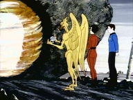
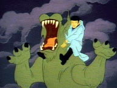
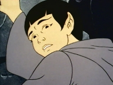
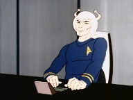

|
MANCHETE
DO EPISDIO
Episdio
anterior | Prximo episdio Sinopse:
Data Estelar: 5373.4.
A Enterprise est de volta ao planeta do guardio da Eternidade, onde um grupo
da Federao usa o portal do tempo para realizar pesquisas histricas sobre o
planeta rion. Kirk e Spock retornam de uma destas viagens no tempo, e descobrem
que no presente Spock no existe mais. Ningum a no ser Kirk lembra-se do 1
oficial da nave, que agora tem um Andoriano no posto, o comandante Thelin.
 De
volta a nave os registros de bordo mostram que neste futuro alternativo, Spock
teria morrido aos sete anos de idade durante um ritual de passagem, chamado Kash-Wan
em Vulcano. Spock lembra-se disto, e lembra-se tambm que na ocasio um primo
distante chamado Selek havia salvado sua vida. Eles concluem que Selek era na
verdade Spock, e que ele prprio havia salvado sua vida no passado.
Spock
decide retornar ao passado, descobrir o que aconteceu para tentar restaurar a
linha do tempo ao normal. Ele viaja pelo portal atravs do tempo at sua cidade
Natal, ShiKahr, onde encontra a se mesmo, alm de sei pai, Sarek e sua me Amanda.
Ele se apresenta como Selek, e Sarek o convida para sua casa, onde acontece ento
o encontro entre os dois Spocks. Spock encontra tambm o seu animal de estimao,
um sehlat chamado I-Chaya.
Chega dia do Kash-Wan, quando o menino Spock
dever passar sete dias no deserto com o mnimo necessrio para sobreviver. O
jovem Spock encotnra-se em duvida sobre seu futuro, pois est pressionado de uma
lado por seu pai, que pretende educ-lo de acordo como o modo de vida Vulcano,
enquanto sua mo, humana, no se furta a demonstrar seu lado emocional em relao
ao filho e a tudo o mais. Ele parte, mas seu Sehlat o segue. Spock manda que I-Chaya
volte para casa e continua sozinho. Spock tambm segue o menino, pois lembra finalmente
se lembra o que aconteceu naquele dia.
 O
Spock adulto encontra a si mesmo sendo atacado por uma animal selvagem, mas o
Sehlat se interpe ao ataque. Na luta animal gravemente ferido, mas permite
a Spock tempo para que este ponha o animal fora de ao. I-Chaya vai morrer,
apenas uma questo de tempo. O jovem Spock corre de volta a cidade e convence
um medico a acompanh-lo, mas o animal est alem de qualquer ajuda. O medico d
ao jovem Spock duas escolhas, prolongar a vida do animal mesmo que este sofra
com isto, ou apressar sua morte. O menino escolhe a segunda opo, e ao fazer
isto, abraa o modo de vida Vulcano para si. Misso cumprida, Salek se despede
de seus pais, e retorna ao seu tempo para notar que tudo voltou ao normal. Comentrios:
Yesteryear, escrito por D.C.
Fontana, tido como um dos melhores seno melhor episodio da Srie Animada.
Partindo do conceito do Guardio da Eternidade, pinado do clssico The
City on The of Forever e juntando elementos da infncia de Spock, estas trazidas
do outro excelente episdio Jorney To Babel, D.C. Fontana consegue costurar
um narrativa muito interessante em torno do nosso vulcano favorito.
 Da
mesma maneira que sua fonte inspiradora, este segmento da serie animada no
um daqueles episdios sobre viagem temporais que pretendem explicar inexplicveis
paradoxos temporais, que existem somente na cabea de fs mais fundamentalistas,
ou ento do fsico Stephen Hawking. Na verdade a viagem temporal uma jornada
pela alma de Spock, uma alma impar, sem duvida. At mesmo por que ficaria difcil
de explicar como que linha do tempo correta dependia de um evento futuro.
Melhor deixar isto para l e ir ao que interessa.
Ao longo da existncia
da Serie Clssica, muito foi dito a respeito das emoes de Spock, mas
Journey to Babel (tambm escrito por D.C, Fontana) introduziu um elemento
ainda mais interessante ao apresentar a me de Spock, uma humana em todos os sentidos.
Sendo seu pai, Sarek. Vulcano, era lgico presumir que a infncia de Spock seria
no mnimo complicada.
justamente neste ponto que o episodio toca, na
escolha de um ento jovem Spock em abraar totalmente a filosofia de vida Vulcana.,
o que definiria um serie de outras escolhas em sua vida. Nos momentos em que Spock
confronta a si mesmo, ele d importantes conselhos a um ento jovem e confuso
Spock, assim como age junto a Amanda e Sarek para que estes vejam de forma positiva
a situao de seu filho.
 Entretanto,
neste processo, Spock rev seu caminho desde a infncia at chegar a idade adulta,
como oficial da Enterprise. Agora mais velho, ele compreende melhor a si prprio
e a seus pais. Esta viagem ao passado, permite a Spock olhar para si mesmo, e
perceber as mudanas que ele qual havia passado sem sequer ter percebido. Talvez
seja esta a interpretao do trocadilho de Spock no ultimo ato deste segmento,
quando ele diz a McCoy, O tempo muda, doutor, o tempo muda.
O resultado
um retrato de um personagem com camadas muito interessantes, principalmente
se partirmos de Yesteryear e passando por Journey To Babel e
Amok Time (outro episdio importante na caracterizao de Spock) chegarmos
a The Undiscovered Country. Ou seja, este segmento da Srie Animada
contribui muito para enriquecer ainda mais o primeiro oficial da Enterprise, e
sempre que Spock vai bem, temos um episodio vencedor em mos. Citaes:
Spock - "Live long and prosperity, Sarek of the
Vulcan."
("Vida longa e properidade, Sarek de Vulcano.")
Sarek - "Peace and long life. You are of my family?"
("Paz
e longa vida. Voc da minha familia?") Trivia:  Mark Lenard, assim como os membros do time principal, retorna neste episdio para
dublar ser personagem, Sarek de Vulcano.
Mark Lenard, assim como os membros do time principal, retorna neste episdio para
dublar ser personagem, Sarek de Vulcano.
Este episdio estabelece que o nome das me de Spock Amanda Greyson. Em Journey
to Babel apenas dito o primeiro nome.
Estabelece tambm o nome da cidade natal de Spock, ShirKahr.
O episdio Tears of the Prophets da sexta temporada de Deep Space
Nine, faz meno a USS ShirKahr NCC-31905. A nave foi destruda durante a
batalha pelo sistema de Chin'toka.
Em Journey to Babel feita uma citao ao bichinho de estimao que
Spock teria quando criana, mas o nome Sehlat s citado em Yesteryear.
Tal animal seria novamente citado em por TPol em The Forge, da quarta
temporada de Enterprise.
Ficha
tcnica: Escrito por
D. C. Fontana
Direo de Hal Sutherland
Exibido em 18/09/1973
Produo: 03 Elenco:
William Shatner como James Tiberius Kirk
Leonard Nimoy
como Spock
DeForest Kelley como Leonard McCoy
James Doohan
como Montgomery Scott
George Takei como Hikaru Sulu
Nichelle
Nichols como Uhura
Elenco convidado:
Mark
Lenard como Sarek
James Doohan alferes Bates
Billy Simpson
o jovem Spock
Keith Sutherland o jovem Sepek
Leonard Nimoy
como Selek
Majel Barrett como Amanda
James Doohan como Healer
James Doohan como Thelen
James Doohan como Aleek-Om
Majel
Barrett como Grey
James Doohan como Erikson
James Doohan
como Guardio da Eternidade
Episdio
anterior | Prximo episdio
|